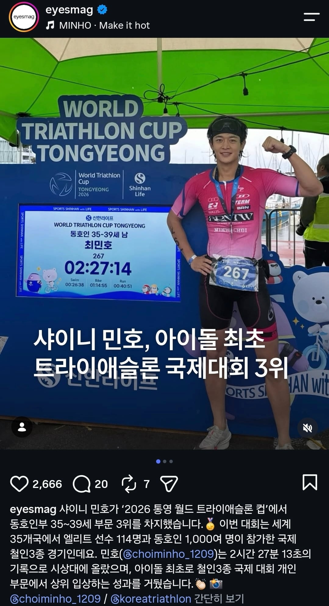
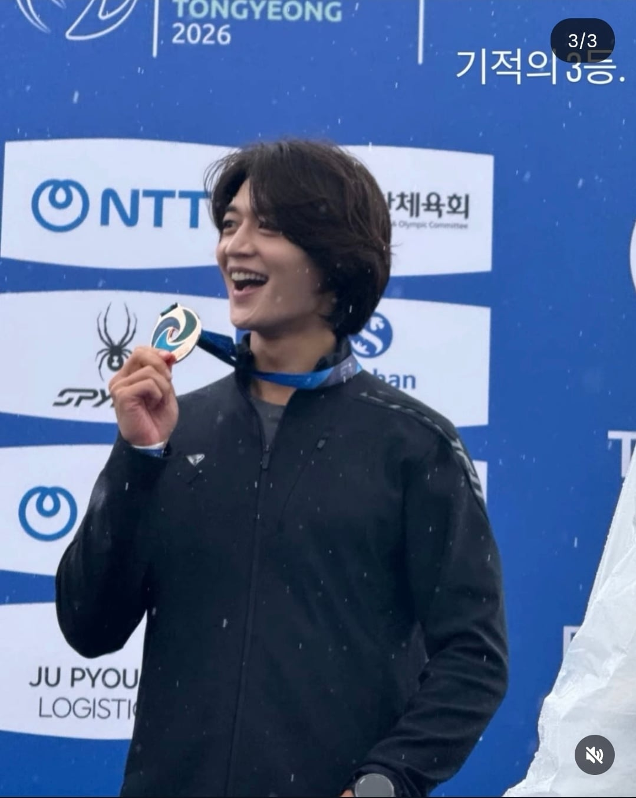

나도 노래한다??


나도 노래한다??
페이스가 너무 빨라서 그런거 아님?
센터같은데서 단체로 하는거면 선두가 조절을 잘 못하는거고 혼자하는건데도 그런거면 페이스 조절이 잘 안되는거고.
총체적 난국이지ㅌㅋㅋㅋ 자세도 안좋아서 어깨가 빨리 피로해지고 부력이 별로 없는지 하체는 계속 가라앉으려고 하니까 킥 수를 줄이면 줄이는대로 힘들어져ㅜ 페이스조절도 그런 이유로 천천히가 잘 안되버림
요즘 롤링 크게 주면서 스트로크 힘 빼는 연습하는중
강습 다시 듣고싶은데 지금 일하는 근무지 주변에 수영장이 마땅치가않네
머리가 들리면 다리가 가라앉고 리커버리가 안좋으면 어깨 피로도가 빨리 오는데 알면서도 안고쳐지는게 수영의 매력이겠지. 사실 나도 말할 처지가 아닌 하수지만 확실한거 하나는 조급함만 내려놓으면 조금씩은 좋아지더라고. 부상없이 즐거운 물생활하길.
장거리 못가는 이유는 발차기를 너무 많이 차거나 호흡을 너무 많이 해서일 경우가 큼
발은 팔 한번 저을때 같은 발 한번 차야함 호흡은 계속 풀 호흡 하지 말고 40~50%만 들이쉬고 뱉어야함
이 두가지 하고 호흡할때 머리들지 말고 힘빼는것만 해도 1km는 쉽게 갈수 있음
2비트킥을 하면 하체가 가라앉고 그걸 보상하려고 스트로크에 힘이 들어가면서 난장판됨ㅋㅋㅋㅋ 2비트킥이 6비트보다 더 힘들어지더라 병신몸!! 머리 더 쳐박고 호흡해야겠네
하체가 가라앉는 이유중 제일 큰게 숨쉴때 머리 들어서임 숨쉴때 물안경 반만 물밖으로 나온다 생각하고 해봐
그리고 자유형 할때 평소에 하는것보다 물속으로 잠수하겠다 싶을만큼 무게중심을 앞으로 두고 해야 다리를 많이 안차도 가라앉지 않음
얘 핑계고나온거 보니까 미친놈이던데
노래해 병신아ㅋㅋ
뭐라도 좀 해 봐 아들
난 다른것보다 수영 배운지 2년 넘어가는데 아직도 500이상 안쉬고 못감ㅅㅂ